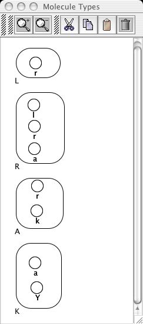

 Each molecule type is created individually on the Editor Window using these modes(buttons):
In particular, to create R(l,r,a) a tri-component molecule with no set states, each internal component is first drawn using the unbound component button. Components in focus are blue in color, while the others shift to black. Next, by changing to object manipulation mode, each component may be separately selected to bring up three options including Rename, Delete and Binding . For R(l,r,a), the components are renamed as l, r, and a.
Using the Container button allows a container boundary to be dragged around the three components. It may be easier to get the desired shape by first creating the container on a blank part of the Editor Window workspace and then reshaping and dragging on top of the components while in object manipulation mode. The container can then be selected to bring up its options including Rename, Delete and Create Molecule Type. The container is renamed R and then registered as a molecular pattern using these options. Component state status will be automatically queried with Create Molecule Type to allow the addition of one or more states. Once finished the Done button will add these states to the molecule and then register it as a valid type. For R(l,r,a) there are no set states, hence the selection of Done is simply chosen first off for each component that is presented.
The molecular pattern defined by R(l,r,a) will then appear in the Molecule Template Palette. The remaining molecule types are created the same way. Between each new molecule that is created and registered, it may be helpful to clear the Editor Window workspace by first selecting the old molecule and then deleting with the cut button. Once a molecule type has been added to the Molecule Types Palette, its overall color will shift from red to green indicating the validity of the pattern. As before, while working on the object as a whole, the blue focus color will override its previous color.